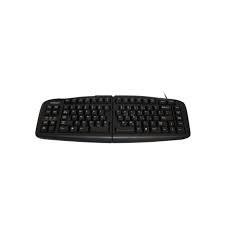
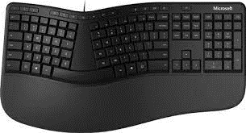

Soorten toetsenborden.
Traditionele toetsenborden:
Dit zijn de standaardtoetsenborden die we allemaal kennen, met een indeling van toetsen die we vandaag de dag nog steeds vaak zien. In Nederland heeft deze dus de indeling van QWERTY, terwijl dat (zoals net gezegd) in andere landen een andere indeling kan hebben. Toetsenborden kun je zo duur maken als je zelf wilt. Ga je voor een simpel en goedkoop toetsenbord, staan ze al te koop voor 15 euro. Mocht je een wat geavanceerder toetsenbord zoeken, kun je op prijzen rekenen van boven de 100 euro.

Traditionele toetsenborden
Ergonomische toetsenborden:
Dit zijn toetsenborden die uit meerdere "delen" bestaan. Die zijn ontworpen om de pols houdingen en bewegingen van de vingers tot een minimum te beperken, door de toetsen te herschikken. Deze toetsenborden zijn soms apart gevormd. Zo hebben sommigen en bolling tussen de toetsen, en zijn anderen compact en recht. Bij deze toetsenborden zit vaak ook een polsensteun. Dit zorgt ervoor dat je polsen niet overbelast raken naarmate van tijd. Dit verlaagt de kans op blessures op korte en of lange termijn, omdat je simpelweg een heel stuk fijner typt. Ook deze vorm van toetsenborden zijn in verschillende kleuren en maten te krijgen. Uiteraard zijn deze toetsenborden een stukje prijziger dan het traditionele toetsenbord. Echter vinden sommige mensen het handiger om deze toetsenborden te gebruiken in plaats van de standaard. Voor hen maakt de prijs dus niet zo veel uit, zolang ze maar fijn kunnen typen.

toetsenborden
Veyboard:
Het veyboard toetsenbord is een alternatief voor een windows pc waarmee veel grotere snelheden
Leuk feitje: Het bedrijf ADATA kreeg ooit een verzoek van een rijk iemand om een toetsenbord te ontwikkelen, wat zo duur mogelijk zou zijn. Uiteindelijk was dit het resultaat (zie foto). Het toetsenbord is volledig gemaakt van goud. Van het toetsenbord zijn in totaal 7 exemplaren gemaakt, die per stuk voor ruim $100.000 de deur uit gingen. Mocht je nou zelf ooit een extreem duur toetsenbord willen, hoef je alleen maar contact te zoeken met ADATA (en natuurlijk een forse bankrekening hebben).